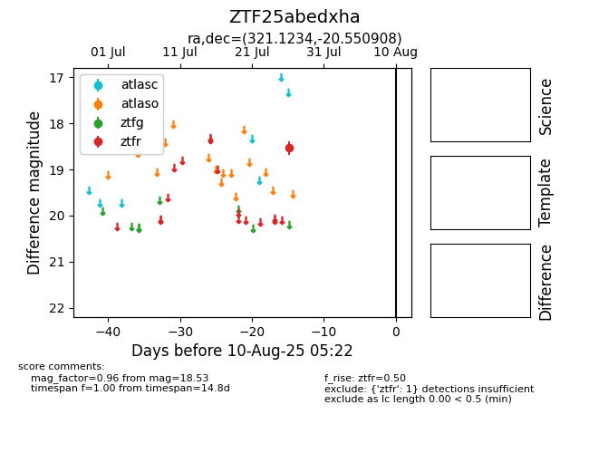

Target ZTF25abedxha at 2025-08-10 05:22, see:
FINK: fink-portal.org/ZTF25abedxha
Lasair: lasair-ztf.lsst.ac.uk/objects/ZTF25abedxha
ALeRCE: alerce.online/object/ZTF25abedxha
alt names
ZTF25abedxha (ztf,fink)
coordinates:
equatorial (ra, dec) = (321.1234,-20.55091)
galactic (l, b) = (29.1959,-42.54349)
photometry
last ztfr=18.53
1 ztfr detections
